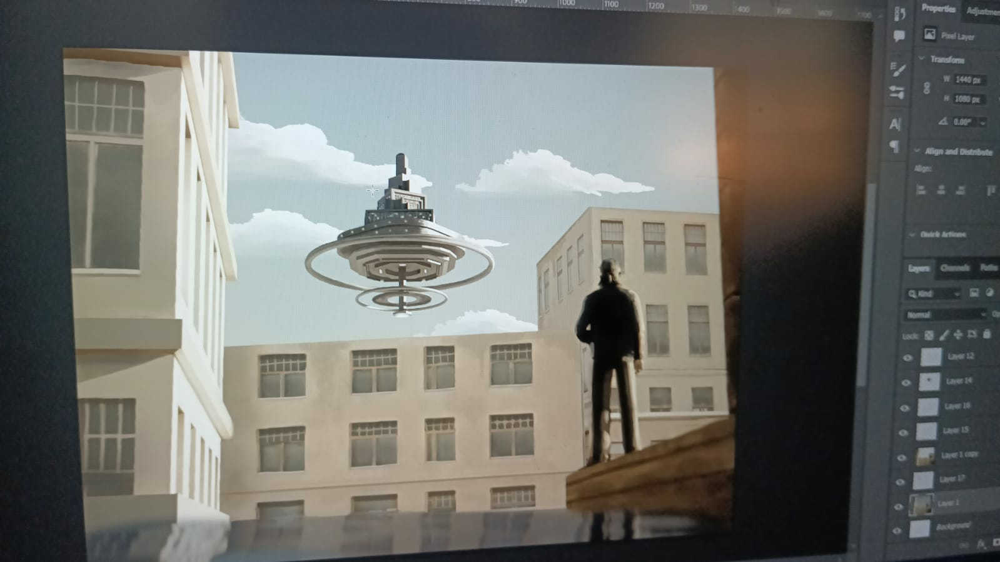
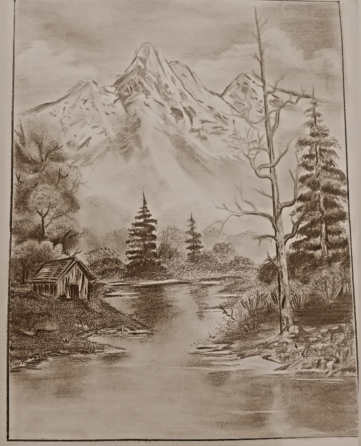

AnfasToday at 6:10 PM
here on the my server you can choose the tag, which only show related result, an method for selecting result you wish.
and after clicking and using it. while you want to show all just click on body, or if you wanna stick to the genre kept it opened. More things are preparing. thank you.
#arts
#uthara
NafiaToday at 6:10 PM
Speech at women’s day
A warm goodmorning to all,
We all know that today is international women’s day. So i want to talk about the importance of education to the women in our society. In this moment I remember a thoughtful qoute’s of the powerful girl Malala yousuf zai “one teacher, one pen and one book can change the world” education is the basic need off all the good activities. Its understand that who iam I. In the current situation women faces lot of problems. The every families locked the girls in the four wall of home. The most of girls are not able to complete their education. The women are hiding their own abilities infront of their families. They sacrifices to the next generation.
Women are the epitome of wealth and power. Women play an important role in society and the whole family is dependent on women for its daily activities. They play the role of mother, wife, homemaker, cook, teacher, friend, Nurse all at the same time while catering to every body’s needs.One of the major hindrances in the growth and advancement of women is gender inequality. This means that we treat males and females unequally even for the same task. This is generally in the case of rural societies. A male child is always encouraged by family to go to school, while the female child is told to learn household works.I want to give a advice to my dear friends. We want courage to against the annoying laws and rules.Thinking of society is also changing slowly. More and more no. of women are getting a quality education. But the true meaning of women empowerment will be achieved when gender inequality will be eliminated. We need to give equal opportunities to women for equal pay, equal respect as equal to men. We look forward to such a nation.
Thankyou, Have a nice day!
#arts
#uthara
minha jasminToday at 8:10 PM
Essay about nature
Nature gifts us the unlimited beauties, but in the modern world man has become too much enthralled in Beauties of nature are unlimited. But unfortunately, the modern man is too much submerged in temporal quests. He is too engrossed to determine the nature and its beauties, the singing of the birds goes unheard, the majestic movements of the clouds goes unnoticed and no one stares at the polluted starry sky.
Even evil capitulates to the beauty of nature. It helps the patients in hospital to recover faster when they are exposed to a pleasant view. Also, it offers Beyond providing pure pleasure, nature’s beauty can therefore offer therapeutics to sick and tottering minds.
Despite providing the healing power nature is also considered as a source of education. The Nature is not only a source of joy, but also a source of education. The humbleness is taught by conducive trees, sturdiness by the mountains and flowers and buds teaches us to smile when we are going through a tough phase in life.
We should not forget that every time we destroy the mother nature or cut a tree we are destroying the most inestimable heirloom that we can leave behind for our children.
Nature which has a healing touch of its own is home, for a broken mind and a ruined body find a lot of contentment and solace in natures’ lap. It is a mystical expression which rejuvenates a man with natural energy and dynamism.
Nature is the most important and integral part of the lives of everyone especially to the poets, writers, artists and painters as it has always been their most favorite topic. God has blessed us with his true love by giving us the gift of nature. Nature comprises of everything which besieges us like air, water, animals, sun, moon etc. Nature is full of colors has both living and non-living things in its lap.
Nature itself is very powerful and unique, changes it forms by season to season and even from minute to minute. Change in nature reflects the change in our mood, like it is said that sunshine, rainy season and spring season cheers our mood whereas peak sunlight gives the feeling of fatigue.Nature has some powerful healing powers which recovers the patients suffering from various diseases, which is why it is said nature has the best healing power. We should get fully aware about our nature and try our best to keep it natural so that it can nourish life on the earth forever.
#eassy
#general
Muhammed ShanidToday at 9:10 AM
To the soil of Tunjan
We set out on a journey with the school students to the land of the father of the Malayalam language in the cool of the morning. We were worried about what would happen when we went there and who we would meet, but there were many challenges. The soil of the father of languages ready to receive guests from everywhere. Tunchan Paramba is ready in the pride of Pamperya in the rainy dawn. Even its trees were there. A lot to say.
People were just starting to arrive. We were in a shelter there. Slowly it started to become active. Then we moved into its interior. The first to welcome us were the historical figures of the Malayalam language. From Bhasha's father through Cherussery to Nambiar, the patriarch of Haswat. Accompanied by pictures and music.In fact, as we traveled through the interior, the culture of the Malayalam language, it was as if we were transported to another world.
Through the beloved poets of Malayalam, traveling through their lines and through the art tradition of Kathakali and Kooth, we have reached the archaeological collection. They also had a lot to tell us. Knowing the stories without them telling us, we continued our journey.Pathumma's goat, Khazak's legend, the lost Neelambari and my story came down to us among the Kathikans who created the magic universe of the story among us through the stops through the words, the dimension. Those of us who came out of there were left with Tunjan's kilikonchal and the couplets of Sopana music.Later, we participated in Mathrubhumi's question and answer program and moved forward after getting to know Mr. KP Ramanunny, the beloved writer of Malayalam. We were in a ecstasy to see the photo in the newspaper for the first time. After lunch we walked around. Tunjan's parrot and Saraswatheemandapam planted by the writers and plowed by the hands gave us excitement.So we waited and waited to catch a glimpse of our favorite writers, to talk to them.Malayalam's personal pride, MT sir, Vyshakhan sir, Sara Joseph and Karassery Mash, the ever-present in Sahasam, were all coming. Impatiently we took a photo with everyone.
On the last half of our journey to its auditorium. Waiting for the words of Karassery Mash and Sarajoseph, SaraTeacher took the characters of Ramayana and brought us another face of them. Karassery Mash talks about the problems of the society and makes us think about the need to change our thoughts and criticizes many things both covertly and openly.The rain that began to fall as Sarajosef's accompaniment was pouring down by the time Karassery was finished. Inside was a torrent of words. Outside it. The feeling we had when we went back after everything was indescribable. From the ancient, historic world to the present day, where the glory and brilliance of Malayalam shines.
There is much more. Let this never-ending journey stop here
Thankyou.
There is much more. Let this never-ending journey stop here
Thankyou.
#eassy
#general
AnfasToday at 6:10 PM
Kindness review
Kindness and Humility is a topic that is often discussed in the context of personal growth and self-improvement. Being kind and humble means treating others with respect and compassion, while also being open to learning and growth.
Practicing kindness and humility can lead to many benefits, such as improved relationships, reduced stress, and a greater sense of well-being. It can also lead to others treating us in the same way, creating a positive cycle of kindness and humility.
Many people find that incorporating practices such as mindfulness, gratitude, and active listening into their daily lives can help them cultivate more kindness and humility. Additionally, regularly reflecting on one's own actions and motivations can help to identify and overcome any unproductive or harmful patterns of behavior.
Overall, kindness and humility are valued traits that can greatly improve one's personal and professional life. Cultivating these qualities can lead to a more fulfilling and satisfying life.
#arts
#uthara
SanaToday at 8:10 PM
Book review
The Hound Of The Baskervilles
Sir Arthur Conan Doyle
The Hound Of The Baskervilles is an outstanding mystery thriller novel from the Sherlock Holmes series,one of the most legendary and most loved literary works of all time,written by British writer and physician Sir Arthur Conan Doyle.. It's one of the few brilliant works that can create an everlasting impression on the minds of readers,by offering some unforgettable memories and fantastic reading experiences,and can be re-read without getting tired..With its unique atmosphere and setting,The Hound Of The Baskervilles stands out from all other Holmes stories,and is perhaps the most popular and most loved Holmes story ever. This masterpiece is the third of 4 crime novels in the detective series,featuring Sherlock Holmes, Europe's No.1 private detective & the most beloved literary character ever created, and Dr.James Watson,his loyal friend and flatmate. It was originally released in 1901 and 1902 as a serialised novel in The Strand Magazine, and published in book form in 1902 .This was the first Holmes tales since the detective's shocking death in the story 'The Final Problem' (1893), but was set prior to his demise.It is set in 1889 largely on Dartmoor in Devonshire,England and the story is about solving a murder mystery connected with a family curse- a hell hound loosed from the pit of hell. The story brings a good sense of mystery, crime fiction, horror and starts with a hint to supernatural as well.The popularity of Hound Of The Baskervilles paved the way for Holmes' appearance in later works. The story begins when Dr.Mortimor, family physician of Baskervilles, visits Holmes and requests him to investigate the mysterious death of his friend sir Charles Baskerville, who was found dead in the moor land near the Baskerville hall. Though the death was due to heart attack,the local people believe that it is connected with 200 years old family curse - a monstrous demon dog. Mortimor explains the legend of the supernatural hound who hunts and kills the heirs of Baskervilles, seeking revenge against the family because of a ancestor who sold his soul to devil to abduct a poor woman.Mortimor is also afraid that sir Henry, nephew of Charles Baskerville and the last heir of the family,who is returning home now from Canada might be in danger. He then requests Holmes for his advice. Though Holmes dismisses the curse as a nonsense,he agrees to investigate the case. Then they meet Sir Henry at a hotel. Henry informs Holmes that he was followed by a stranger,also received a mysterious letter from unknown which asks him not to go to Baskerville hall if he cares is about his life.Holmes sends Watson with Sir Henry and Mortimor to Baskerville where he meets some new faces who could be the possible suspects.Watson makes some investigations of his own and faithfully sends the details to Holmes.Meanwhile, Holmes reaches there secretly and hides in the more all the time unknown to everyone. Later he joins Watson.At the Baskerville hall, Holmes finds a missing link in a photo,which becomes a turning point in the case.It leads him to find the actual killer and the possible motive for the murder.He also realises that the hound is belongs to the killer. Using his keen sense of observation, fantastic skills of reasoning and deduction, he joints all the dots of mystery and collects more evidence to trap the killer.But unfortunately they are not enough for a jury to prosecute the criminal, so Holmes decides to use Sir Henry as a bite to catch the criminal red-handed,though it's a very risking and dangerous attempt. Finally the horrible night,that keeps both the readers and characters alike on the edge of their seats comes.Through the thick fog present at the scene, they see a dreadful shape leaping towards them, enormous and coal-black,fire bursting from its mouth, eyes glowing..A spectral hound loosed from the pit of hell.. Literally a blood curdling scene.. Yet,they succeed in eliminating that fearsome beast very dramatically, as soon as it attacks the designated victim. Meanwhile the murderer as well as the owner of the hound, drowns in mire while running panicked from the scene. Thus,Holmes saves the Baskervillers from the curse that's been hunting them for ages..The case ends adding one more golden feather into Holmes' great achievements. The story is very dramatic, atmospheric and captivating. It has everything a complete entertaining and captivating story needs - a legend,a mysterious death and a very creepy setting.It does a great job of combining elements of mystery and subtle supernatural horror. The legend of the devil like hound of Baskervilles sets up this mystery very nicely. The atmosphere created by setting this mystery in an ancient wild moor land and a creepy dark English mansion, miles away from civilization is highly effective. That kind of setting can make anyone start to believe in ghosts.Even the appearance that Doyle gives the demonic dog can hunt people in their dreams at night.All these elements combine to make The Hound Of The Baskervills one of the greatest crime novels ever written. Doyle wrote the story in a classic classic manner. The story uses first person narration, as narrated by Dr.Watson. He documents the story through his eyes and his experiences.The language used is a bit formal but not difficult to understand.Since it's a detective novel,the author has to make all the points crystal clear to the readers.This makes the story lengthy and a slow read. So you may need an extreme amount of patience to read it, but it's definitely worth the read.The focus,precision,and energy of the story will keep the readers alert throughout and never tired.You can't help but complete the read as soon as possible.The novel would be a great choice for all ages above 9, while it's not recommended for children under 10 as they may find it a bit creepy.. All in all, The Hound Of The Baskervilles is a completely entertaining,and mind blowing mystery thriller. it's nothing shorter than a must read.I would highly recommend this brilliant book to those who love reading horror thrillers, mysteries and crime fictions.You just have to read a couple of pages and you will fall right into Holmes' and Watson's world full of adventures. And when you finish reading,you shall certainly miss this dynamic duo and you may have to go back and pay them a visit sometime.
#eassay
#general
UtharaDecember 17th

#arts
#uthara
HibaToday at 10:08 AM
Speech
Harmful effects of durg addiction
Good morning to your excellency, respected principal,teachers and my dear friends.
Today l'm here to talk to you about the harmful effect of durg addiction.
Durg addiction os becoming very common among our youth perhaps the youth find this life too tiring and burdensome and as an escape from it they take durg.very often love of fun and new thrills make the beginning external factors such as peer pressure, familys expection, failure, rejection,societal pressure etc.. Can also lead to durg addiction.Durg addiction is q severe problem all over the world.A person who is addicted cannot resist using them and unable to function correctly with out ingesting them. Taking durg can lead to many health problem such as vomiting, respiratory and lung damage, liver and kidney damage it also effect their family, friends and work.
There are various treatment method available to treat durg addiction such as behavioral counselling, medication,treatment of anxiety and depression.
In addition to this, we must educate children about the dangers of durg so that they dont evet try l would like to conclude my speech
Thankyou
#eassay
#general
NazimDecember 17th

#arts
#uthara
MushfikaToday at 6:10 PM
Ikigai
Francesc Miralles &Hector Garcia
It s a famous Japanese concept which originated from the island in japan called okinawa.The Japanese term “ikigai” or the “art of living” refers to the practice of living a purposeful life with respect to a person’s sense of the self.
the book is about the people living in Okinawa who have found a way to live a happy and long life. most people with age above 100 are found in okinawa following their routine well and the people in the island are healthy happy and visibly they have a shine on their face and that has gappled researches for a long time so when start researching on this they came up with the concept ikigai. People of Okinawa have found their ikigai and that makes them love whatever they do and love, their life style is active and all of these factor make their life long lasting.
The introduces you to some of the concepts of Japanese culture and value of “the happiness of always being busy”. It narrates the art of staying young while growing old, scientific facts about food, active mind that would translate to youthful body.
Ikigai is a combination of four elements , what you love (passion), what the world needs(missions),what you are good at (vocation)and what you can get paid for (profession) if you have clear answers for these and already on track then you are destined to be happy and live long according their believes.
as a whole provides a daily dosage of how to embrace and obtain a healthier and happier way of life, through discovering our individual ikigai with experiences, practices and tips for a sophisticated yet harmonious lifestyle. Various aspects of our lives are addressed in this book- such as the importance of flow, the importance of friendships, the reason for living and finding a source of motivation.
It also states that avoiding stress is essential for a healthy lifestyle. Necessary scientific studies have also been introduced which show that stress, in the long run, impacts the healthy cells in our body thereby leading to premature ageing. It presents Yoga as a remedy, which would calm the body.
Later in the book they talk about Logotherapy, where a person has to keep rediscovering the purpose of life. The search for purpose into life, finding a driving force that helps to achieve goals.
The fourth segment of this book focuses on the “flow” concept. The flow concept revolves around enjoying the smaller joys of life, in a manner that sustains concentration so that the person doesn’t get bored in doing it. In addition to this, the importance of surpassing levels
of difficulty has also been addressed, and how flow can be acquired through new thrilling activities which drive us to discover new traits and aspects of us. This book encourages small gestures to establish and preserve friendships, such as greeting a stranger with a smile that can directly impact an individual’s longevity.
Overall, this book is truly uplifting. The reader is intrigued by the simplicity and calming tone it offers, and it captures the attention of the reader till the end. The book unleashes the Japanese Zen philosophy, inspiring the readers to search and discover their individual ikigai. Through this book, the authors aim at encouraging healthy, content and purposeful living among people. Online Judiciary Preparation .It is must read for someone who wants to discover purpose of their life or achieve some great heights in their career. Anyone who looks for longevity this book is a quick help to bring immediate changes to one’s life.
#eassay
#general
FidhaToday at 6:10 PM
The Alchemist
Paulo Coelho
A boy takes Santiago by the hand of a shepherd boy while he is tending his sheep and leads him to Egypt and shows him the treasure near the pyramids. Santiago is inspired by this dream and he travels. The Alchemist is the story of that journey – a skeptical man's pilgrimage through life. Paulo Coelho, the world famous Brazilian writer, has a way of giving divine fragrance to worldly life. Every decade a book is born that changes the lives of its readers. The Alchemist is such a book.
A good story is a feeling that prevails even when passing through the life of a shepherd named Santiago. We will also travel along. Along with reigning the story. I don't know how to write it. Something like energy, positivity, a feeling that we too can conquer all our dreams in this universe. The page where I said farewell to Fatima was so delicious that my hair stood on end. As well as communicating indirectly when pondering after reigning. In the same way, we are looking for treasure without seeing the treasure nearby,some time we reach the edge of success and dont give up.the alchemist wrot about love and love,which are my favorite lines.love doesn't hold anyone back from their goal.True love is what inspires you to travel to your goal again.after reading this book,I hope that one day i will reach the dream that i see beyond this when problem come in my life.sometime it will be a moment before death,but it is like giving a sign that this book will give you today and forever. There is a treasure waiting for every one...
#eassay
#general
:quality(70)/vidio-web-prod-user/uploads/user/avatar/43227705/fiann20_-ee45ea.jpg)
ThufailDecember 17th

#arts
#uthara
jaseelToday at 6:10 PM
Poem
Mom
You love me
without reason ,
You show me that you care ,
You take me through
each season ,
Your always kind and fair ,
My life with you is never
humdrum , There are no
conditions of love from
you my mom.
You show me that you care ,
You take me through
each season ,
Your always kind and fair ,
My life with you is never
humdrum , There are no
conditions of love from
you my mom.
#poem
#general
Aisha LuluToday at 6:10 PM
Life full of surprised
And Miracles
Life is not always happy. Life is a big struggle for all of us. Only by fighting
Just hold on. Life is a period between birth and death. There is only one life and live as a shadow to others without hurting them. In Plustu's English book there is a chapter called Horamalu and there is a character in it whose name is Ratna. I don't know what her main quality was, her hobby was that she used to talk to her fellow workers for no particular reason and just listen to their problems. Do we have such a person, are we such a person, but we all need such a person, so try to be such a person in the life of others. That is, when they tell us their sorrows, it is not a small thing to say that we have listened without judgment, but that we have listened. If there is nothing that can bring happiness to those who have it, why should we do it if it can be a way to get away from sorrows! Only those who are calm can be calm to others. Only those who become light themselves can be light to others. Only rich people can be happy. There is no such thing as happiness because of money.It is not money that is important, but a few good memories that we can remember and remember are enough in life. We want to have good moments with our loved ones and we have to remember that this is all there is, so we try to create it intentionally. People of today are those who do not hesitate to do anything for money. Everyone has enough money so there is no point in earning a lot, money is not important in life. People who earn just Rs. a day are living happily. And what is the importance of having this person with us, it is only to love when this person is warm with us. If we look at it like this, there will be a cold day, a day that will go cold, and we will say that we are dead, and then singing about love will not matter. All we need is the warm embrace of a man. Not since the cold of man is with us like this. We all want a lakh in life and strive for it. trust me never ever quit. You've lost a thousand times. But one day it will reach there. The biggest skill you need to get ahead in life is to keep your t-shirt on. If you stop and throw stones at all the dogs barking at you while walking along the road, you won't get to where you need to be at the correct time. it's going on, it's going on. but on my terms. He has never committed suicide and is still alive. But I have the right to decide how to do it. APJ Abdul Kalam's words "What can I do alone is the thought of all people. Look at the sun, it alone illuminates the whole world" is very relevant here. Have you ever lost in Life! Have you heard only accusations and taunts from those who are there, and when you stand to climb the last step of the goal, you will be lying down from there or someone tried to push you. One we must have quit or two... its just a beginning of something!
It is not us who should write our destiny. work hard in silence let your success be your noise. Ghalim Al Mufta is the name most noticed among them for the opening of the Qatar World Cup. A brave young man who thinks that there is no movement below my waist and does not blame fate and fights in a way that puts even fate to shame. When Gani was born 20 years ago, seeing the child's condition, the doctor had predicted a short life but science had to turn a blind eye to Gani's determination. The young entrepreneur who started his own ice cream company at an early age and became successful. Official speaker of uvent. Re Chout Asia's Goodwill Ambassador. Shams is the one who crossed 3000 meters. Multi-talented seniors who have proven time and time again that health needs to be mental. Your story doesn't end with feeling bad about life, suffering is necessary to enjoy the benefits. If you fall down, there will be many people who will trample on your renewal, so get back up and walk with your head held high.The worst day in life is the day we don't laugh. Our life is ours and there is no need for us to avoid it because of what other people think. Don't say yes thinking what they will think if we don't say yes to something we don't like. I think no is more powerful. What a man decides not to do will change his life. That is, many people don't know what I want, what I can't do, what I don't want, and our life will be set. There is only one life and live happily without hurting anyone. There will be pains and sorrows, but there is joy in it, which was always happy. You have to endure all the pains in life, right? It is stupid not to end life like that. But we have to overcome everything and move forward, that's where we become ourselves.
#eassay
#general
AnfasToday at 6:10 PM
Drop Your Experience
I doing what i could , Still could make it better. share ideas. I had take Little Effort on this coding. thank if it good
#general